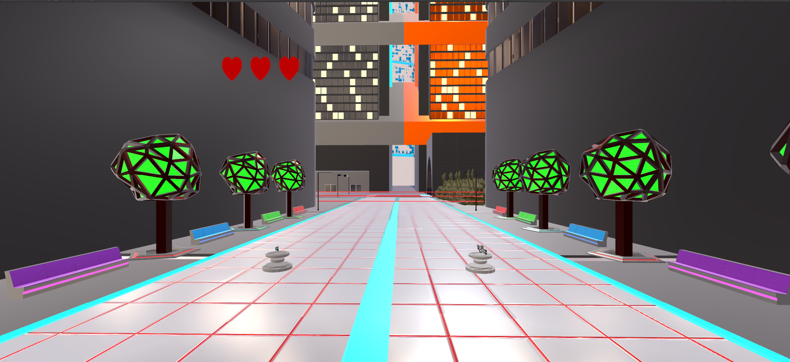
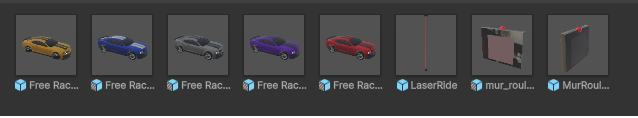
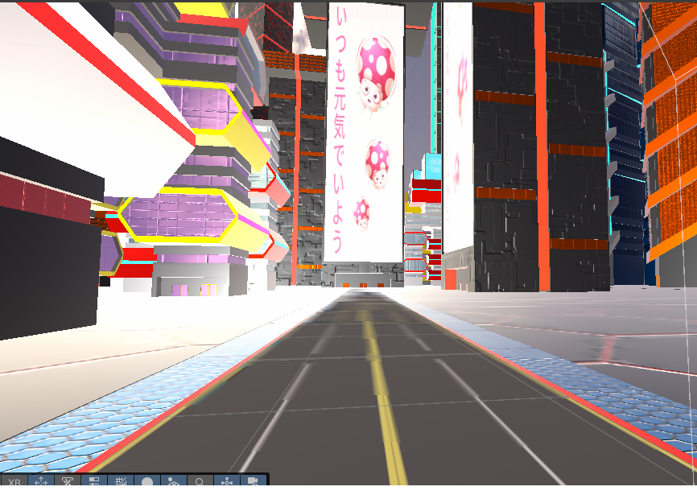

Jeux de Parcours en Réalité Virtuelle
Il s'agit d'un jeux vidéo de parcours linéaire et sans fin en réalité virtuelle .

Contexte et problématique
Nous devions créer un jeu vidéo en réalité virtuelle dans le cadre de mon cours de réalité virtuelle, avec un thème libre. Nous avons donc décidé de créer un jeu de parcours sans fin. Le principe est simple : le joueur dispose d’un pistolet et avance sur une route où différents obstacles apparaissent, comme des voitures, des portes avec des cibles sur lesquelles il faut tirer ou encore des lasers qu’il faut éviter en se baissant. Le but est de ne pas se faire toucher. Lorsqu’un obstacle est percuté, le joueur perd une vie. Après avoir perdu ses trois vies, la partie s’arrête et un score est affiché. Le jeu reprend ainsi le principe des jeux d’arcade, avec pour objectif de réaliser le meilleur score possible.
Objectifs
- Génerer un jeu vidéo fonctionnel en réalité virtuelle
- Créer un jeu de parcours sans fin
- Faire un jeu interressant
- Maitriser blender et le développement en réalité virtuelle
Missions principales
- Modèle 3D
- Mapping
- Développement des armes à feu
- Création de l'interface graphique
Étapes de réalisation
- Création d'un concept.
- Analyse du projet.
- Création des modèles 3D.
- Développement du jeu.
- Présentation du jeu à la classe.
En images


Ce que j'en retiens
Il s'agit d'un projet qui m'a permis d'appronfondir le dévellopement en réalité virtuelle, notamment sur Unity et le langage C#. J'ai également pu améliorer mes compétences en modélisation 3D avec Blender.